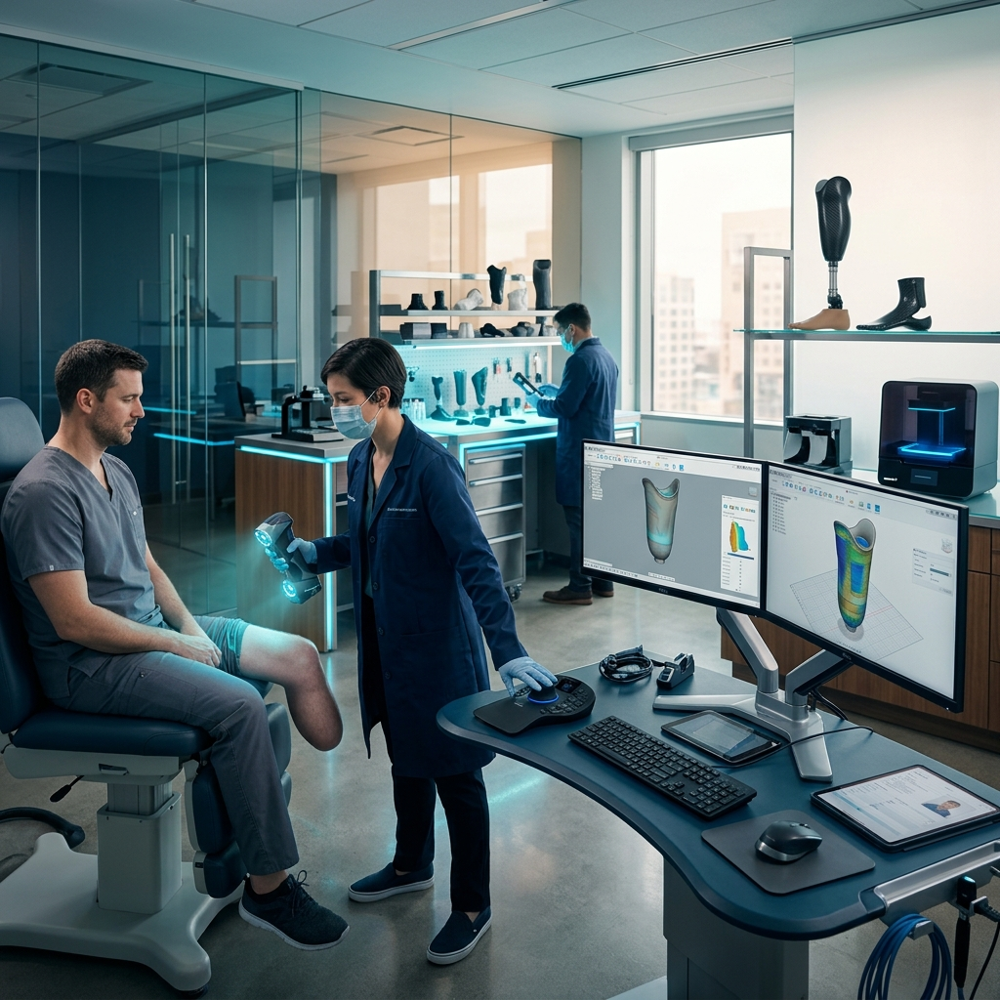
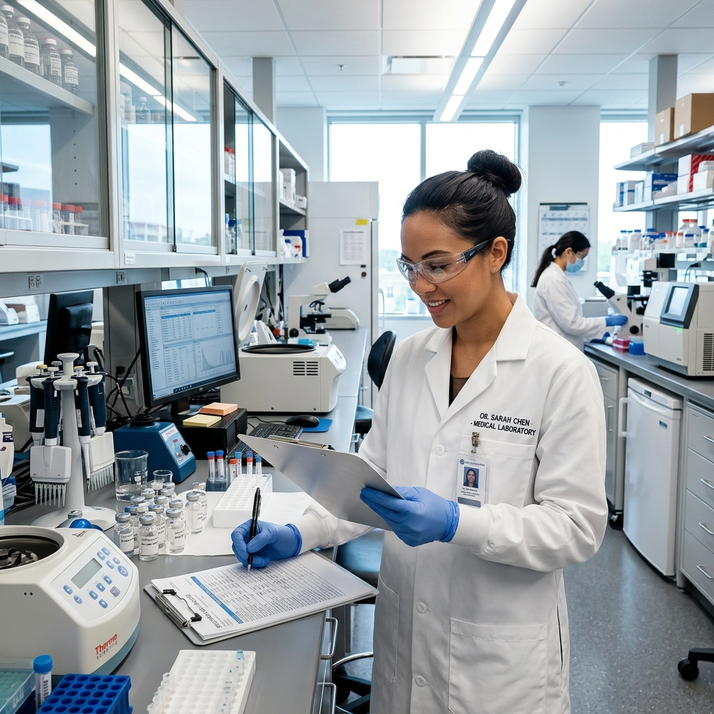

Restoring Life's Natural Motion & Mobility
We engineer custom bionic prosthetic limbs and advanced orthopedic orthoses. Our digital CAD/CAM clinic works in partnership with physicians to restore human physical capacity.
Accredited Clinical Integrity

Active Bio-Sensing Tech
Myoelectric carbon fiber socket adjustments
Custom Prosthetic Solutions
Our lab synthesizes bio-compatible polymers, composite carbon fabrics, and sensory controls to rebuild individual kinetic mobility.

Upper Limb Prosthetics
From multi-articulating myoelectric hands to heavy-duty body-powered utility wrists. Custom molded sockets maximize control and comfort.
- Myoelectric signal sensors
- Carbon-reinforced chassis

Lower Limb Prosthetics
High-activity running blades, microprocessor controlled knees (MPKs), and multi-axial carbon fiber feet optimized for uneven terrain navigation.
- Microprocessor gait adapters
- Vacuum suspension sockets

Pediatric Solutions
Lightweight, impact-resistant structures designed to grow alongside the child. Vibrant patterns, robust hinges, and friendly clinical support.
- Modular growth adapters
- Hypoallergenic materials
Patients Restored
Custom devices fitted globally
Gait Success Rate
Clinical mobility goals met
Satisfaction Score
Comfort and fitting reviews
Avg Fabrication
Digital scans to fitting room
Fabrication Process
How we turn advanced biometric scans into robust, custom mobility solutions ready for patient integration.
Consultation
Initial physical review and practitioner consultation.
Assessment
Comprehensive 3D laser scan and diagnostic checks.
Design
CAD/CAM rendering of custom socket and structure.
Fabrication
Milling, printing, and composite lamination.
Fitting
In-clinic trial, alignment tuning, static adjustments.
Follow-Up
Regular wear checks and socket modifications.
Before & After Restoration
See the physical transformation achieved through our custom fabrication process.

What Our Patients Say
Thousands of patients have regained independence through ApexFlex custom prosthetics and orthotics solutions.
"After my below-knee amputation, I thought running was over for me. ApexFlex designed a carbon fiber blade that fits like it was grown on my body. I completed a 5K last spring."
James Thornton
Transtibial Amputee • Runner
"My daughter's scoliosis brace from ApexFlex is incredibly lightweight. She wears it to school every day without complaint. The clinical team is so patient and thorough — truly world-class care."
Linda Park
Parent • Pediatric Orthotics Patient
"My microprocessor knee from ApexFlex gave me back my independence. The gait analysis team was meticulous — they adjusted the fit three times until it was perfect. I can't thank them enough."
Robert Diaz
Transfemoral Amputee • MPK Patient
Physician Referral Pathway
We work in direct partnership with orthopedic surgeons, physical therapists, and clinics. Our lab streamlines code billing and diagnostic data processing, providing your patients with rapid device turnarounds and precise fit alignments.
Submit referral form with medical files
Upload patient scans and prescription details.
Collaborative diagnostic scan review
Our clinical prosthetists check fits via 3D CAD modeling.
Continuous alignment checkups
We send regular gait tracking reports and adjustment logs.

Are you a healthcare provider?
Partner with ApexFlex to fast-track your patient’s recovery cycle. Access our digital prescriptions portal or book a consulting call with our bio-engineering leads.